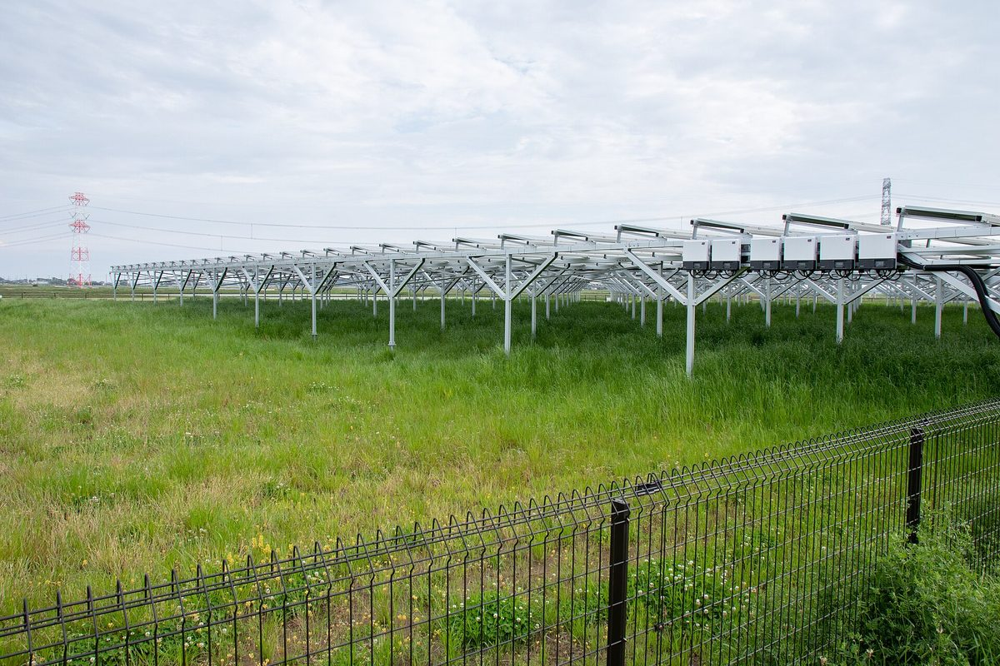

후쿠시마로 돌아와 영농형 태양광 운영하는 농부들 다룬 다큐멘터리 〈햇볕의 농부들〉…오바라 히로야스 감독, 발전 수익이 농업 실험 떠받쳐

니혼마쓰 곤도 케이 씨 약 6ha 농지에 4MW 설비, 고향 떠났던 농부 2명 합류…방사성 물질 검사 수치 공개하고 출하, 감독은 원전 사고에서 태어난 청춘영화라는 관객 평 소개
원전 사고 뒤 버려진 후쿠시마 농지로 돌아와 영농형 태양광을 운영하며 농사를 다시 짓는 농부들을 담은 다큐멘터리 〈햇볕의 농부들: 후쿠시마와 희망〉의 오바라 히로야스 감독이 발전 수익이 이들의 농업 실험을 가능하게 했다고 밝혔다. 영화의 중심인물인 곤도 케이 씨는 니혼마쓰시에서 유기농업을 하다 원전 사고 뒤 농사를 접었고, 2021년부터 약 6ha 농지에 4MW 규모 영농형 태양광을 세워 다시 농사를 짓고 있으며, 아홉 살 때 고향 후쿠시마를 떠났던 쓰카다 하루 씨와 스가노 유키 씨도 그의 농장에 합류했다. 이들은 원전 사고를 일으킨 도쿄전력의 전기에 기대지 않겠다는 마음으로 발전을 시작해 포도·밀·겨자·콩을 기르고 소도 키우는데, 오염이 없다고 홍보하기보다 방사성 물질 검사 결과와 수치를 공개한 뒤 출하해 소비자가 직접 판단하게 한다. 오바라 감독은 농업만으로는 안정된 수입을 얻기 어려운 상황에서 전력 판매 수익 덕분에 농부들이 땅을 사고 새 품종에 도전할 수 있게 됐다며, 영농형 태양광이 후계자가 줄던 지역의 산업을 일으키고 거대한 발전기를 가진 기업이 우위에 서는 시대를 끝낼 수 있다고 주장했다. 그는 지난 9월 17일 서울 마포구에서 열린 상영회에서 관객과 만났으며, 후쿠시마의 진정한 회복은 새 시설과 도로가 아니라며 "복구할 수 있는 것은 인간의 마음밖에 없다"고 말했다.
시민에너지 관점
약 6ha 농지에서 4MW를 생산하는 설비가 땅을 사고 새 품종을 시험할 여력을 만들어 줬다는 것은, 발전 수익이 농민 손에 남을 때 영농형 태양광이 농업을 살리는 자본이 된다는 뜻이다. 패널이 농지를 잠식하고 농사는 뒷전이 된다는 우려가 있지만, 이 농장은 발전 수익으로 오히려 농사의 폭을 넓히고 떠났던 젊은이를 불러들였다. 같은 패널이라도 외지 기업이 소유하면 수익은 농촌 밖으로 빠져나가고, 농민과 마을이 소유해야 그 돈이 다음 농사와 다음 세대로 이어진다. 국내 영농형 태양광 제도도 농민과 마을 공동체가 발전소의 주인이 되는 길을 기본으로 열어야 한다.
출처: 경향신문 2026-10-23 오경민 기자 원문 보기
福島に戻り営農型太陽光を営む農家を描いたドキュメンタリー『日差しの農夫たち』…小原浩靖監督、発電収益が農業の挑戦を支える
二本松の近藤恵さんは約6haの農地に4MWの設備、故郷を離れていた農家2人が合流…放射性物質の検査値を公表して出荷、監督は原発事故から生まれた青春映画という観客の評を紹介
原発事故の後に放棄された福島の農地に戻り、営農型太陽光発電を営みながら再び農業に取り組む農家を描いたドキュメンタリー（韓国での題名を直訳すると『日差しの農夫たち：福島と希望』）の小原浩靖監督が、発電収益が彼らの農業の挑戦を可能にしたと語った。作品の中心人物である近藤恵さんは二本松市で有機農業を営んでいたが原発事故の後に農業をやめ、2021年から約6haの農地に4MW規模の営農型太陽光を設けて再び耕作しており、9歳で故郷の福島を離れたツカダ・ハルさんとスガノ・ユキさんも近藤さんの農場に加わった。彼らは原発事故を起こした東京電力の電気に頼りたくないという思いから発電を始め、ブドウ・小麦・からし・豆を育て牛も飼っているが、安全だと宣伝するのではなく放射性物質の検査結果と数値を公表してから出荷し、消費者が自ら判断できるようにしている。小原監督は、農業だけでは安定した収入を得にくいなかで、売電収入のおかげで農家が土地を買い、新しい品種に挑戦できるようになったと説明し、営農型太陽光は後継者が減っていた地域の産業を興し、巨大な発電設備を持つ企業が優位に立つ時代を終わらせることができると主張した。監督は9月17日にソウル・麻浦区で開かれた上映会で観客と対話し、福島の本当の回復は新しい施設や道路ではないとして「復旧できるのは人間の心だけだ」と述べた。
市民エネルギーの視点
約6haの農地で4MWを発電する設備が、土地を買い新しい品種を試す余力を生んだということは、発電収益が農家の手に残るとき、営農型太陽光が農業を立て直す資本になることを意味する。パネルが農地を侵食し農業が二の次になるとの懸念もあるが、この農場は発電収益でむしろ農業の幅を広げ、故郷を離れていた人々を呼び戻した。同じパネルでも外部の企業が所有すれば収益は農村の外へ流れ、農家と集落が所有してこそ、そのお金が次の農業と次の世代につながる。韓国の営農型太陽光の制度も、農家と地域共同体が発電所の持ち主になる道を基本として開くべきだ。
出典: 京郷新聞 2026-10-23 オ・ギョンミン記者 原文を読む
记录回到福岛经营农光互补的农民的纪录片《阳光农夫》…导演小原浩靖：发电收益支撑农业尝试
二本松近藤恵在约6公顷农地上运营4MW设备，两名曾离开家乡的农民加入…公开放射性物质检测数值后出货，导演介绍观众称其为诞生于核事故的青春电影
纪录片（韩国片名直译为《阳光农夫：福岛与希望》）记录了在核事故后荒废的福岛农地上重新务农、经营农光互补发电的农民，导演小原浩靖表示，发电收益让这些农民的农业尝试成为可能。片中主人公近藤恵曾在二本松市从事有机农业，核事故后一度放弃耕种，2021年起在约6公顷农地上建起4MW规模的农光互补设施重新耕作；9岁时离开家乡福岛的Tsukada Haru和Sugano Yuki也加入了他的农场。他们出于不想依赖造成核事故的东京电力的电力而开始发电，种植葡萄、小麦、芥菜和豆类，还养牛；他们不是宣传产品安全，而是公开放射性物质检测结果和数值后再出货，让消费者自行判断。小原浩靖说，在仅靠农业难以获得稳定收入的情况下，卖电收入使农民得以购买土地、尝试新品种，并主张农光互补能够振兴后继者日益减少的地方产业，终结拥有巨型发电设备的企业占据优势的时代。他9月17日在首尔麻浦区举行的放映会上与观众交流，并表示福岛真正的恢复不在于新设施和道路，"能够复原的只有人心"。
市民能源视角
约6公顷农地上4MW的发电设施为农民创造了买地和试种新品种的余力，这说明当发电收益留在农民手中时，农光互补就会成为振兴农业的资本。有人担心光伏板会侵占农地、让农业退居次要，但这座农场反而用发电收益拓宽了农业经营，并吸引离乡的人回来。同样的光伏板，如果归外来企业所有，收益就会流出农村；只有农民和村庄拥有，这笔钱才能延续到下一季农事和下一代。韩国的农光互补制度也应把农民和社区成为电站主人作为基本路径。
来源: 京乡新闻 2026-10-23 记者 Oh Kyung-min 查看原文
Documentary follows farmers who returned to Fukushima to run agrivoltaics; director Hiroyasu Obara says power income underpins their farming experiments
In Nihonmatsu, Kei Kondo runs a 4MW installation on about 6ha of farmland, joined by two farmers who had left home; produce ships after radiation test figures are published, and the director cites a viewer who called it a coming-of-age film born of the nuclear disaster
Hiroyasu Obara, director of a documentary shown in Korea under a title that translates as "Farmers of the Sun: Fukushima and Hope", says income from solar power has made possible the farming experiments of the people it follows, who returned to Fukushima farmland abandoned after the nuclear accident and now farm beneath solar panels. The film's central figure, Kei Kondo, was an organic farmer in Nihonmatsu who gave up farming after the accident and since 2021 has farmed again on about 6ha of land under a 4MW agrivoltaic installation, joined on the farm by Haru Tsukada and Yuki Sugano, who had left their home prefecture at the age of nine. They began generating power out of a wish not to depend on electricity from Tokyo Electric Power, the company behind the accident, and now grow grapes, wheat, mustard and beans and raise cattle; rather than advertising their produce as safe, they publish radiation test results and figures before shipping so that consumers can judge for themselves. Obara said that with farming alone failing to provide a stable income, electricity sales have let the farmers buy land and try new varieties, and argued that agrivoltaics can revive local industry in areas short of successors and end an era in which companies owning giant generators hold the upper hand. Obara met audiences at a screening in Mapo, Seoul, on 17 September, and said Fukushima's real recovery lies not in new facilities and roads: "The only thing that can be restored is the human heart."
Citizen Energy View
That a 4MW installation on about 6ha of farmland gave farmers the means to buy land and test new varieties shows that when power income stays in farmers' hands, agrivoltaics becomes capital for revitalising agriculture. There are fears that panels eat into farmland and push farming aside, but this farm has used its power income to broaden its farming and draw back people who had left. The same panels owned by an outside company send the income out of the countryside; only when farmers and villages own them does the money carry on into the next season's crops and the next generation. Korea's agrivoltaics rules should make it the default path for farmers and local communities to become the owners of their power plants.
Source: Kyunghyang Shinmun 2026-10-23 Oh Kyung-min Read the original